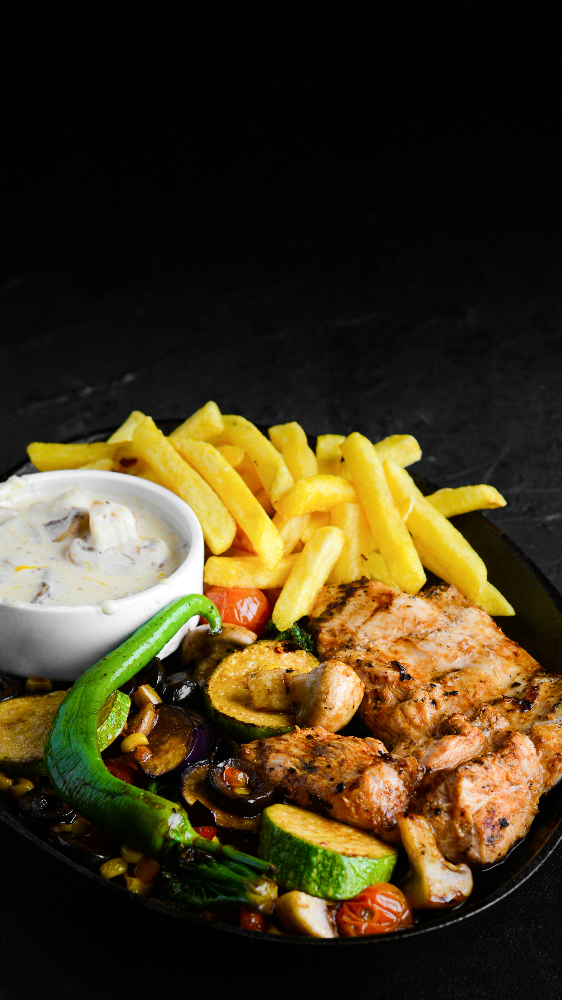

Chicken-Mushroom

General Information:
A classic European dish featuring tender chicken breasts smothered in a rich, creamy mushroom sauce.
Its elegant, delicious, and pair perfectly with mashed potatoes.
Ingredients
- Chicken breasts (thinly sliced)
- 200g fresh mushrooms (sliced)
- 1 cup heavy cream
- 2 cloves garlic (minced)
- 1 tbsp butter
- Salt, black pepper, and dried oregano
Preparation Steps:
- Season the chicken with salt, pepper, and oregano.
- Sear chicken in butter over medium-high heat until golden and cooked through. Remove and set aside.
- In the same pan, sauté garlic and mushrooms until softened.
- Add heavy cream and simmer until the sauce thickens
- Return chicken to the pan, coat with sauce, and serve hot.
Home